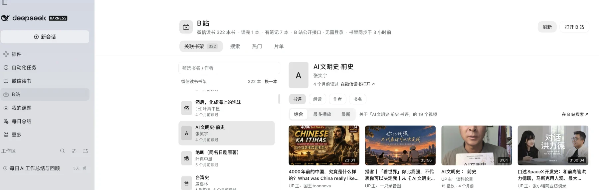
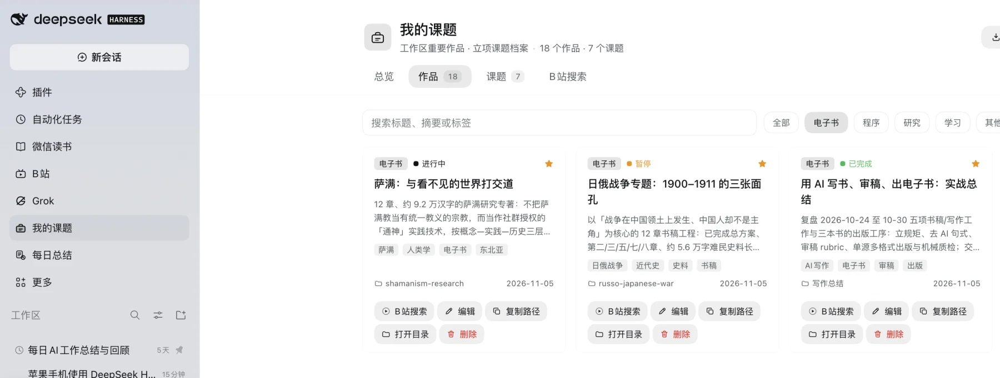

DSH 工作台：把书、课题和 B 站收进一扇窗
晚上十一点四十二，我截了这张图：左边是 DSH 侧栏里的微信读书、B 站、我的课题、每日总结，右边是书架里的 322 本书，和其中一本在 B 站的 19 个书评视频。从「我在读什么」到「别人怎么看这本书」，只隔一次点击。
在这之前，它们分在三个地方：微信读书、文件夹和 B 站的搜索框。

一、插件不是补丁，是地基
插件让 DSH 不止是个智能工作台：装上插件，界面里就能长出侧栏入口、整页面板和浮在界面上的小窗。插件是个小目录：后台那一半跑在 DSH 进程里取数据、读文件、写缓存，页面那一半负责画界面，两边用只读接口传数据，装、停、回滚都不碰主程序。
这些插件不是我一个个敲的——我说清需求，小深写、装、测，刷新就能用。20:02 我提「把微信读书接进来」，20:15 面板就能看书架；20:21 提「在下面关联 B 站」，六分四十四秒后装好了。一个晚上，四个入口。
二、四个入口
微信读书是只读的阅读面板：书架、笔记、统计、设置四个页签。322 本书，有笔记 7 本；统计页里是 846 天、约 340 小时。密钥只存本机，点「同步」才拉一次。
B 站是它的邻居：选中一本书，先看它的划线、想法、书签和读到哪儿，再按「书评 / 解读 / 作者 / 书名」搜视频。视频能在内嵌播放器里直接看，点星标收进本地片单；不登录，只用公开接口。
我的课题收的是本机工作区里做出来的东西：18 件作品、7 个立项课题，卡片上有状态、路径和 B 站搜索按钮，课题表有「下一步」。每日总结是同一个插件的第二个入口，翻每天 23:59 归档的工作日报。

三、书、课题、视频：连成一条线
真正有意思的不是入口，而是它们能互相找到。书是「问题」的入口：322 本书不是收藏，是待办，划线和想法是线索。课题是「沉淀」：立项表和工作区目录是一回事的两面。B 站是「外延」：书评看评价，解读看梗概，作者访谈认人，书名找讲座和课程。
今晚翻到《叙利亚：权力交汇下的破碎之地》，想摸背景就去旁边的 B 站：书评、高清文明史、两百年独立挣扎的解读、巴沙尔最后影像，收两三个，回工作区继续写。
这条线是：在书架上遇见问题，在课题里放下，在 B 站听见别人的回答，再回到自己的稿子里写下来。